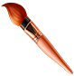
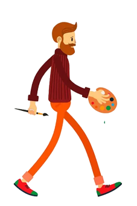
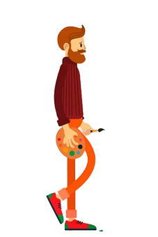
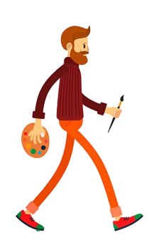

Эта иллюстрация — идеальное визуальное воплощение философии нашего парка. В центре композиции, словно в раме из воздушного зефира или взбитых сливок, парит большой красный чайник. Это не просто чайник, а символ главного угощения парка — сладкой ваты. Его глянцевые бока напоминают гигантскую карамель, а внутри, кажется, плещется не чай, а клубничный или ванильный сироп. За чайником — голубое небо и яркое солнце, символизирующие беззаботное лето и «Облачный безлимит», который ждет гостей. Белая фигурная рамка вокруг картины — это те самые облака, которые дали название парку. Стол и стулья по бокам — это приглашение остановиться, передохнуть и попробовать ту самую «порцию счастья». Вся композиция выдержана в пастельных, пудровых тонах (зеленый, розовый, голубой), которые создают ощущение уюта, безопасности и детской радости.



